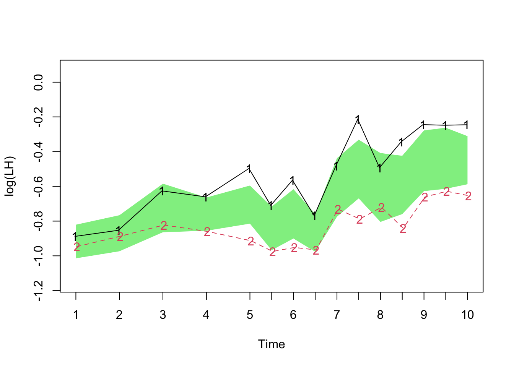
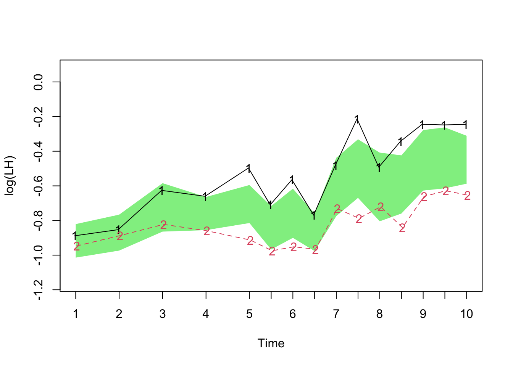

11 Models with random effects
Random effects arise when there is variation among the measurements taken from `units’ in an experiment but we wish to regard this variation as representative of the wider population of units. Sometimes we take measurements from constituent parts of the units, giving the variation a hierarchical (or multilevel) structure.
11.1 A problem with paste
____________________________________________
Example: Paste manufacture
A company uses a chemical paste in one of its production processes and receives deliveries of the paste in batches. The quality control department of the company is concerned about the variability in the strength of paste and decided to investigate. Ten batches of paste were randomly selected for a number of deliveries (one batch is received per delivery). From each of the batches a random sample of three casks was selected and two random determinations were made from random samples from each cask.
Where does most of the variability lie – at the batch, cask or individual measurement level?
(Data source: Intermediate Statistical Methods by G B Wetherill.
____________________________________________
First we read the data.
ggplot graphics give some helpful options on how the data can be plotted.
library(ggplot2)
ggplot(d, aes(Strength, Batch, col = cask)) + geom_point()
ggplot(d, aes(Strength, cask)) + geom_point() +
facet_wrap(vars(Batch))
A mixed effects model allows different (hierarchical) levels of error to be constructed. Each batch has its own ‘adjustment’ from the overall mean. Within each batch, each cask has its own further ‘adjustment’ from the overall and batch means. Within each cask, the individual within-cask measurements can be viewed as further ‘adjustments’ from the overall, batch and cask means. If we index the batches, casks and within-cask measurements by \(b\), \(c\) and \(iw\), then we can express this in a model as:
\[
y_{bcw} = \mu + \varepsilon_b + \varepsilon_{bc} + \varepsilon_{bcw}
\]
where
\[
\varepsilon_{b} \sim N(0, \sigma^2_b), \hspace{3em}
\varepsilon_{bc} \sim N(0, \sigma^2_c), \hspace{3em}
\varepsilon_{bcw} \sim N(0, \sigma^2_w)
\]
The nlme package gives us the tools to fit such a model. The summary requires a bit of interpretation, but close inspection shows that the estimates of standard deviation at batch, cask, and within-cask levels are 1.287348, 2.904061 and 0.8234125 respectively. That suggests that the cask level is where the variation is strongest.
## Linear mixed-effects model fit by REML
## Data: d
## AIC BIC logLik
## 254.9907 263.3009 -123.4954
##
## Random effects:
## Formula: ~1 | Batch
## (Intercept)
## StdDev: 1.287351
##
## Formula: ~1 | cask %in% Batch
## (Intercept) Residual
## StdDev: 2.904061 0.8234122
##
## Fixed effects: Strength ~ 1
## Value Std.Error DF t-value p-value
## (Intercept) 60.05333 0.6768652 30 88.72274 0
##
## Standardized Within-Group Residuals:
## Min Q1 Med Q3 Max
## -1.479769640 -0.515579424 0.009496994 0.471991829 1.389687791
##
## Number of Observations: 60
## Number of Groups:
## Batch cask %in% Batch
## 10 30When using any model, we would like to have some reassurance that it describes the data adequately. Plot of residuals provide an informal, but very useful, way of checking this. If the model is adequate then the residuals should simply display random variation, with no obvious patterns or structure. The plot below reassures us that the model is an adequate fit.

11.2 Repeated measurements
_________________________________________________
Example: Leutinizing Hormone Levels in Cows
An experiment was carried out to compare the concentrations of leutinizing hormone (LH) in 16 suckled and 16 nonsuckled cows. Measurements were made daily from day 1 through to day 4 postpartum, and twice daily from day 5 through to day 10 postpartum. The cows were ovariectomised on day 5 postpartum.
Source: Raz(1989), Biometrics 54, 851-71.
_________________________________________________
The data are available in the dataframe luthor in the rpanel package. However, the data are in ‘block’ form so we need to reorganise it into long vectors in order to make use of later modelling functions.
The gather function (in the tidyr package) handles the details for us. First we give the dataframe variables names and then we create an id variable so that we can keep track of which animal each measurement comes from. The key argument gives a name to the variable which will index the long vector of measurements and the value argument names the long vector. The remaining argument specifies the columns from which the long vector is made.
library(tidyverse)
names(luthor) <- c("gp", as.character(c(1:5, (5 + (1:10) / 2))))
luthor$id <- 1:nrow(luthor)
luthor.tidy <- gather(luthor, key = "times", value = "luthor", 2:16)
glimpse(luthor.tidy)## Rows: 480
## Columns: 4
## $ gp <dbl> 1, 1, 1, 1, 1, 1, 1, 1, 1, 1, 1, 1, 1, 1, 1, 1, 2, 2, 2, 2, 2, …
## $ id <int> 1, 2, 3, 4, 5, 6, 7, 8, 9, 10, 11, 12, 13, 14, 15, 16, 17, 18, …
## $ times <chr> "1", "1", "1", "1", "1", "1", "1", "1", "1", "1", "1", "1", "1"…
## $ luthor <dbl> 0.516, 0.367, 0.471, 0.450, 0.709, 0.273, 0.346, 0.261, 0.433, …A plot of the ‘repeated measurements’ over time immediately suggests that a transformation to the log scale might be helpful.
ggplot(luthor.tidy,
aes(times, luthor, group = id, col = factor(gp))) +
geom_line()
ggplot(luthor.tidy,
aes(times, log(luthor), group = id, col = factor(gp))) +
geom_line()
It is also useful to plot summaries such as means and (2) standard errors to see the underlying patterns. We will move to the convenient function rp.rmplot from the rpanel package to do this. In the third plot below the shaded area has width two standard errors of the difference between the means at each time point. This helpfully highlights evidence for differences in the two mean trajectories, in an informal manner.
LH <- luthor[,2:16]
gp <- factor(luthor[,1])
times <- times <- c(1:5,(5+(1:10)/2))
rp.rmplot(log(LH), id = id, fac = gp, timept = times, type = "mean",
panel = FALSE)
rp.rmplot(log(LH), id = id, fac = gp, timept = times, type = "mean+bar",
panel = FALSE)
rp.rmplot(log(LH), id = id, fac = gp, timept = times, type = "band",
panel = FALSE) 

For a proper analysis, a model is required. It is clear that we need a time effect and a group effect, and possibly an interaction. This can be written as \[ y_{ijk} = \mu + g_i + t_k + (gt)_{ik} + a_{ij} + \varepsilon_{ijk}, \] where \(i\) refers to group, \(j\) to animal within the group and \(k\) to time point. Notice the additional term \(a_{ij}\) which represents a `level shift’, above or below the mean, associated with animal \(j\) in group \(i\). This level shift appears for all the measurements over time for this animal. It is assumed to be a normal random variable with mean \(0\). The model parameter associated with this term is the standard deviation of this random level shift.
The advantage of this model is that it gives a more realistic description of how the data have been generated. In particular, it should make a better job of capturing the structure of the random variation present. That means that the standard errors of the group and time effects will be more realistic than a model which assumes all the variation is simply independent added noise.
Main effects and their interaction from the fitted model are shown in the summary below.
library(nlme)
model <- lme(log(luthor) ~ times * gp, random = ~ 1|id, data = luthor.tidy)
anova(model, type = "marginal")## numDF denDF F-value p-value
## (Intercept) 1 420 13.164260 0.0003
## times 14 420 3.484231 <.0001
## gp 1 30 0.164824 0.6876
## times:gp 14 420 1.516862 0.1014The interaction is not significant, suggesting that the evidence for the shape of the mean trajectories being different is not convincing. However, we have treated time as a factor, assuming no connection between the mean responses at each time point. Perhaps we should investigate a model which describes the evolution over time through a smooth, non-linear curve of some kind.
11.3 A case study: reading attainment
First we read the data.
ggplot graphics again provides a simple way of producing some attractive and helpful visualisations.
library(ggplot2)
ggplot(d, aes(Age, Readatt)) + geom_point() +
facet_grid(Ethnicity ~ Sex)
ggplot(d, aes(Age, Readatt, col = Sex)) + geom_point() +
facet_wrap(vars(School))
We need to think carefully about how the errors should be modelled. For the moment, we will include only Age in the fixed effects, as this is the variable which clearly influences reading ability strongly. A random effect for each pupil, which allows them to display greater or lesser individual ability, is a good starting point. A residual plot helps us to assess the adequacy of this model, in an informal manner. Some non-random patterns suggest that we need to improve the model.
Another plot may help. This one shsows the trajectory of each individual over time. An interesting feature is a suggestion that these trajectories ‘fan out’ a little over time. This may suggest that pupils who are good readers at an early stage improve their reading ability over time at a greater rate than those who are poorer readers. This sounds plausible.

We can incorporate this into a model by describing these trajectories through straight lines (plus random error) whose slopes are described by random effects. The lme syntax enables this to be specified easily. The residual plot nolonger shows non-random features and a formal test confirms that the simple random effects model is inadequate, in comparison with the model which allows random slopes.
model2 <- lme(Readatt ~ Age, random = ~Age | School/Pupil, data = d)
plot(model2)
anova(model1, model2)## Model df AIC BIC logLik Test L.Ratio p-value
## model1 1 5 3805.112 3832.466 -1897.556
## model2 2 9 3213.340 3262.577 -1597.670 1 vs 2 599.7717 <.0001Now that our model has a good random effects structure, we can examine the fixed effects in greater detail. The summary gives no evidence of an ethnicity effect, but does show a sex effect with girls producing a better average performance, in addition to the age effect which we already know is present.
model3 <- lme(Readatt ~ Age + Sex + Ethnicity, random = ~Age | School/Pupil,
data = d)
summary(model3)$tTable## Value Std.Error DF t-value p-value
## (Intercept) 7.11786482 0.08078767 1350 88.105827 0.00000000
## Age 0.99302507 0.01567781 1350 63.339507 0.00000000
## Sexgirl 0.13267770 0.06133136 372 2.163293 0.03115494
## Ethnicitywhite -0.09410687 0.06497269 372 -1.448407 0.14834569It would be wise for us to examine whether interactions might be present. That is left as an exercise.